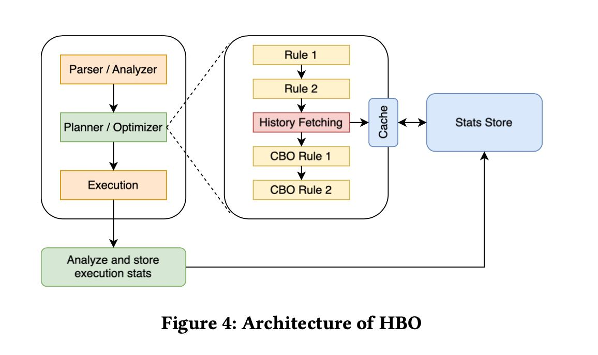
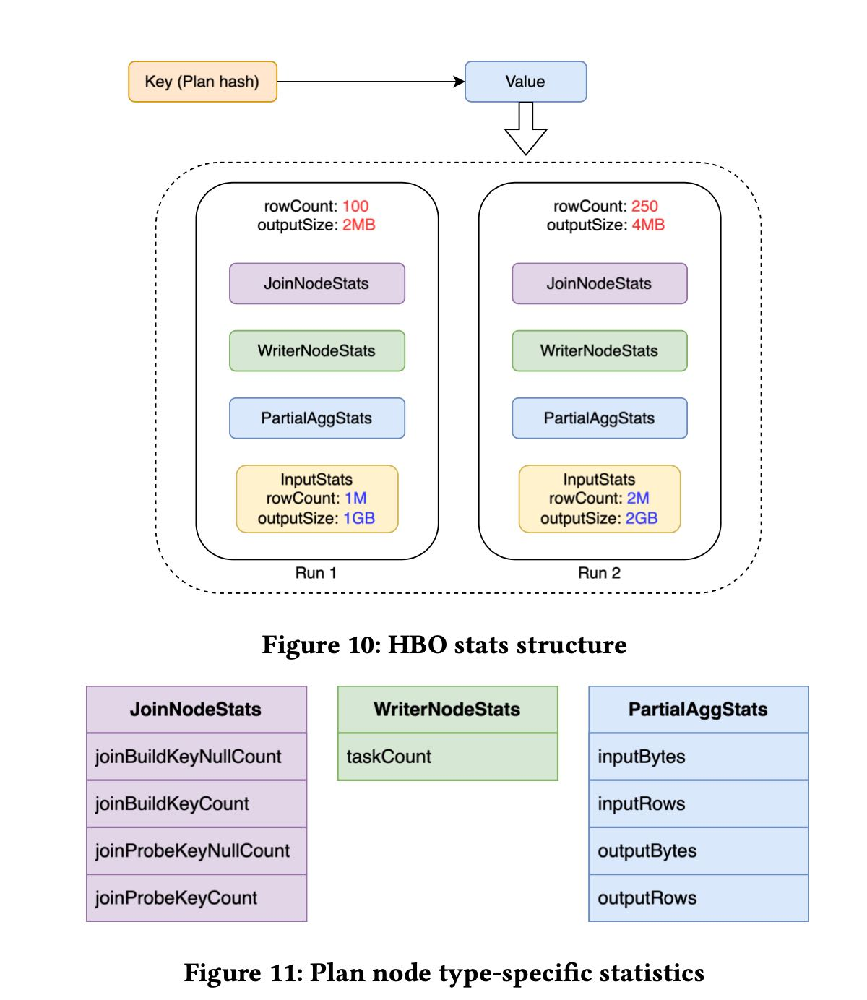

Presto's History-based Query Optimizer
presto如何使用历史查询来收集统计信息，以此来改进未来plan的执行计划，这个东西就叫做history-based query optimizer(HBO). 所以目前我还知道的有cbo(cost-based query optimizer)和LBO(learned-based).
HBO设计的时候有下面几个重点或者说创新
[!NOTE] HBO solves many of the problems that previous approaches failed at, namely:
- Accuracy: Statistics are recorded during actual execution runs and tracked at the operator level, thus eliminating large estimation errors introduced from deriving cardinali- ties of complex expressions using only base table statistics.
- Automation:Histories are tracked by a light-weight pro- cess with every query run, thus avoiding the need for sam- pling overhead or model training for priming the statistics estimators.
- Adaptiveness: Changes to the underlying data distribution are automatically reflected in tracked histories and used in future optimizations.
- Explicability: users and DBAs can view where the esti- mated data came from and how far it is from the actual value.
目前presto收集的统计信息比较粗，想支持直方图但是一直没有上
[!NOTE] Presto stores statistics at the partition level1 and include the following:
- overall cardinality of the partition
- column statitstics including
- Average size
- Number of distinctv alues
- Number of null values
- Range(min/max) for the values
At the moment, Presto does not support additional well-established data distribution sketches such as histograms [20]. There are on- going efforts to add support for these from our open-source partners, but at the time of writing these were not part of the main Presto distribution.
这个系统的思路其实并不复杂，估计主要还是工程量比较大：怎么改presto代码，怎么去线上部署，怎么来在生产上验证效果。大致思路是；
- 在RBO阶段对于所有的plan nodes进行归一化，并且找到stat-equav(统计上相当)的plan nodes. 比如最后产生的plan nodes A，它有许多stat-equav的plan nodes Xs.
- 然后交给执行器去执行。比如在执行完成A之后，把A上的统计信息拿到，交给Coordinator.
- Coordinator负责将A以及A的stats-equav plan nodes统计信息写入到redis 里面(kv store).
- 未来查询的时候，同样可以根据归一化的plan node去redis里面拿统计信息。

在归一化上主要的问题就是尽可能地capture plan node feature. 这篇论文有个假设就是大部分的query都是来自于query template, 也就是模式其实大概相同，主要就是parameters变化。所以他们在归一化的时候主要就是如何把常数给删除掉。常数删除了，那么query/plan几乎就是一致的。删除常数主要是使用placeholder代替，比如 `date = 2024-01-01`, 那么就会变为 `date in (X)`. 其中X是placeholder. 至于上层plan node(非table scan node)归一化主要就是一些规则。最后得到一个特别长的字符串，然后用SHA256作为key.
为了应对changing data, 在存储value的时候还给plan nodes加上了一个特征input stats. 也就是说一个key可能对应多个run，不同的run上input stats是不同的。当CBO要去问stats的时候，拿到value之后尽可能地使用input stats相当的run来作为统计信息估计。
